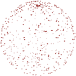
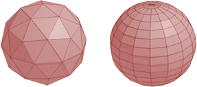
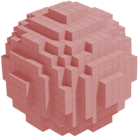
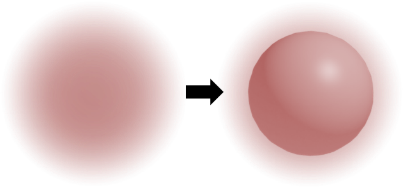

Model Data Structure
Point Cloud（Surfel）
「點雲」。大量的點座標，皆位於物體表面。
點雲是以儀器掃瞄物體所得到的原始資料，儀器是相機、雷射、聲納等等。根據儀器的功能，點座標還可以附加其他資訊，比如顏色、法向量。
大家習慣將點雲轉換成其他資料結構，減少資料量，減少處理時間。
Mesh
「網格」。大量的平坦多邊形。通常是三角形或四邊形。
一個三角形有三個頂點座標。三角形的頂點順序，決定了三角形的正面：正視三角形的正面，我們習慣讓三角形頂點呈逆時針順序。依照頂點順序計算叉積，得到三角形的正面的法向量。這是大家約定俗成、心照不宣的規矩。
資料結構鮮用一維陣列，而常用兩個一維陣列：一個陣列記錄每個點的座標、另一個陣列記錄每個三角形的三個點的編號。由於三角形經常共用頂點，因此兩層式的資料結構，得以節省記憶體空間。
大家習慣使用網格。優點是計算方便，只有點與邊。缺點是失真，稜稜角角。
Parametric Surface

「參數表面」和「網格」概念相仿，連續與離散的差別而已。
「參數表面」。大量的曲面。通常是Bézier surface或NURBS surface。
Voxel
「體素」。整數格點有著數值。通常是Boolean或實數。
訂立臨界值，等於此臨界值的地點，當作表面。調整臨界值，以擴張或收縮表面。
資料結構鮮用三維陣列，而常用八元樹。有人把體素的八元樹稱作sparse voxel octree。
體素和像素概念相同，差別僅在於：像素數值通常是RGB顏色、體素數值通常是物質密度。
建立體素，通常是以超音波、核磁共振等儀器，掃描真實物體，取得各種直線軌道的數值；然後實施演算法，估計每一個體素的數值。請參考image reconstruction。
亦可手動設定體素數值，打造心儀模型。例如MagicaVoxel。
亦可運用特殊亂數，決定每一個體素的數值，打造特殊模型。例如三維版本的Perlin noise，可以打造雲霧。請參考這份講義。
Isosurface（Implicit Surface）
「等值表面」和「體素」概念相仿，連續與離散的差別而已。
「等值表面」。處處皆有數值。通常是實數。
以一個連續函數，決定每一個地點的數值。訂立臨界值，等於此臨界值的地點，當作表面。調整臨界值，以擴張或收縮表面。甚至累加多個函數，得到特殊的表面形狀。
知名範例是blobby surface：運用「球體」的數學函數，打造球體模型；改用「淡出的球體」的數學函數，例如三維常態分布，打造球體模型；令多個三維常態分布相加，打造宛如肥皂泡的模型。
以連續函數建立模型，優點是100%精確，無論如何縮放，細節依舊清晰，沒有任何偏差。
順帶一提，等值曲面有一個特例是distance field，能產生模型的聯集、交集、補集。請參考isosurface rendering。
Point Cloud Registration
登記。多台相機於多個位置拍攝相同景物，各得一群點雲。把所有點雲整合到同一個世界座標系，校正誤差。
請參考對齊的演算法。
Point Cloud ⇨ Mesh
crust algorithm：先求Voronoi diagram，納入其頂點再求Delaunay triangulation。改良版本。
Ruppert's algorithm：美化既有的Delaunay triangulation。
Poisson surface reconstruction：一、point cloud ⇨ voxel：體素數值內1外0。點雲法向量等於體素梯度，再以體素梯度求解體素數值，即是解Poisson equation。二、voxel ⇨ mesh：體素儲存於八元樹，套用八元樹版本的marching cube。程式碼與模型。
Voxel ⇨ Mesh
marching cube：觀察一個立方體：8個體素、12條邊。根據12條邊的端點大小關係，決定網格位置。這是程式碼。改良版本。
dual contouring：額外知道每個體素的梯度，得以製造美觀網格。
Parametric Surface ⇨ Mesh
變成三角形：每一個曲面切成n×n格，每一格沿對角線切成兩個三角形，就這麼簡單。越多格，越細膩，越逼真。
變成平坦四邊形：我不知道怎麼做。